Take Your Meds.
Stay
One pill a day keeps the crisis away. A simple guide to medication adherence for type 1 and type 2 diabetes.
What is Diabetes?
A chronic condition — and why your medication is the single most important tool you have.
Three Main Types
Understanding your type defines your treatment plan and adherence strategy.
Real Talk on Medication
Short videos to help you understand why staying on track with your medication truly matters.


The Real Cost of Skipping
A missed dose feels harmless in the moment. Over months and years, uncontrolled glucose silently destroys organs.
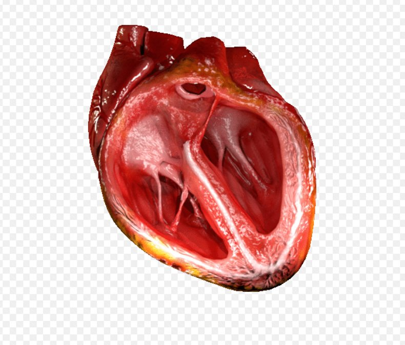
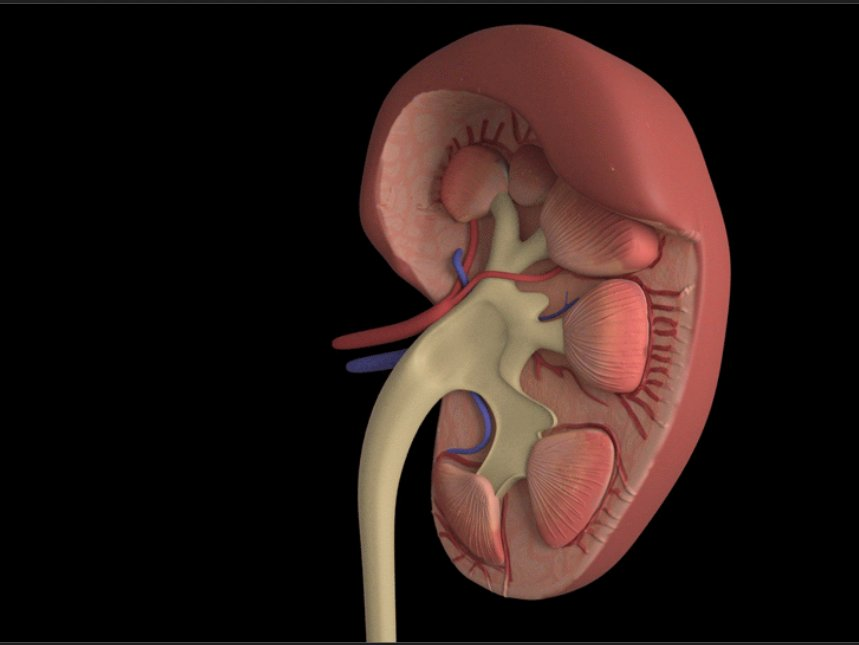
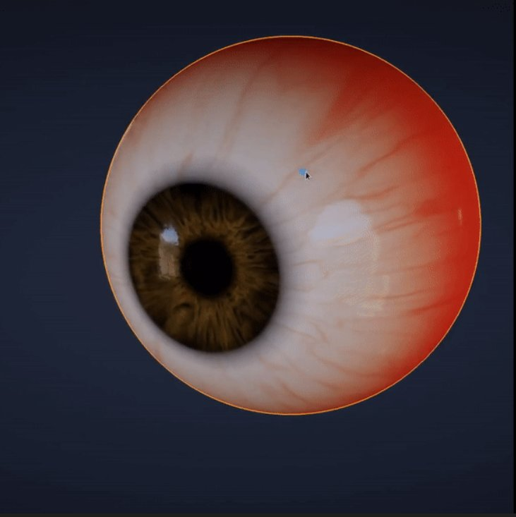
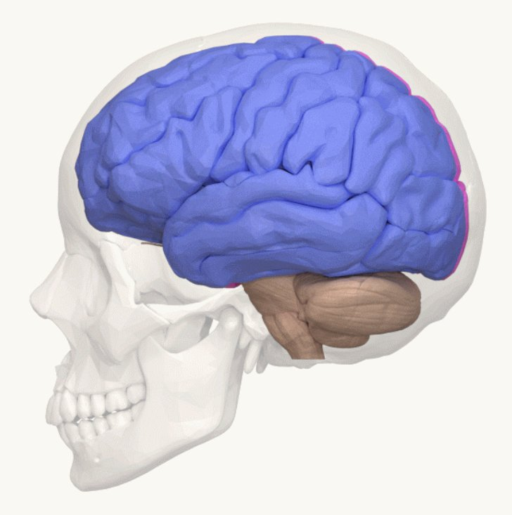
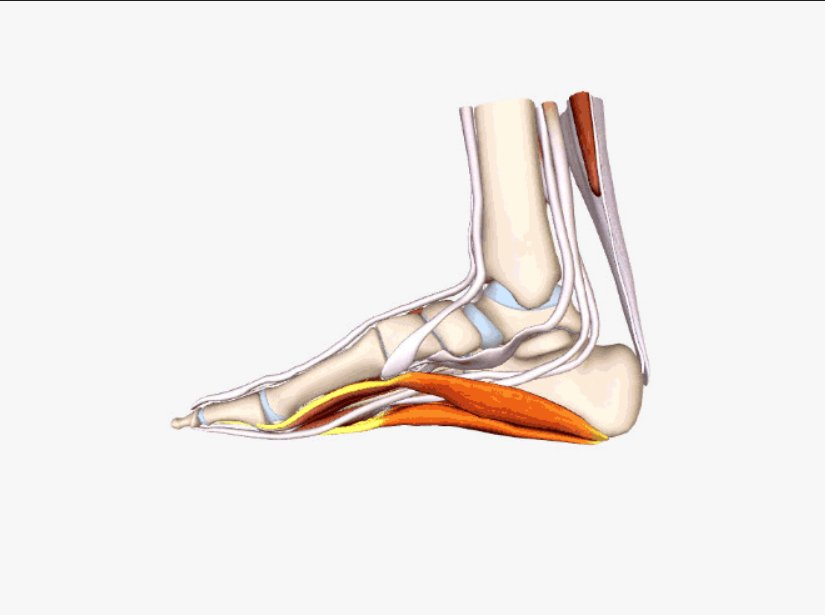
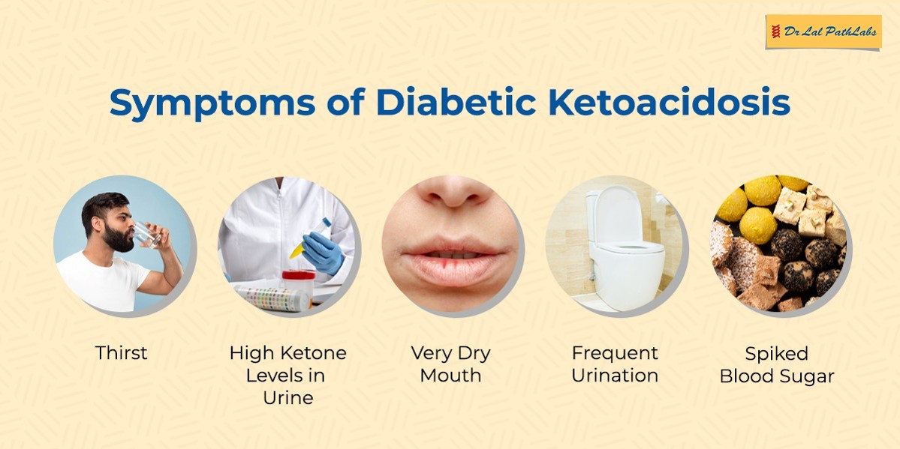
Why Adherence Changes Everything
Consistent medication is not optional for diabetes — it is the foundation every other health outcome rests on.
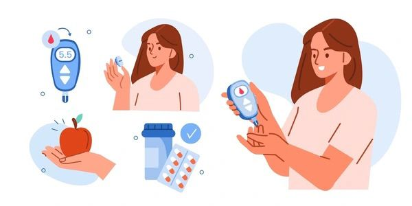
Daily RoutineYoung Adults with Diabetes Mellitus
Why this age group faces uniquely difficult challenges — and what makes adherence harder here than anywhere else.
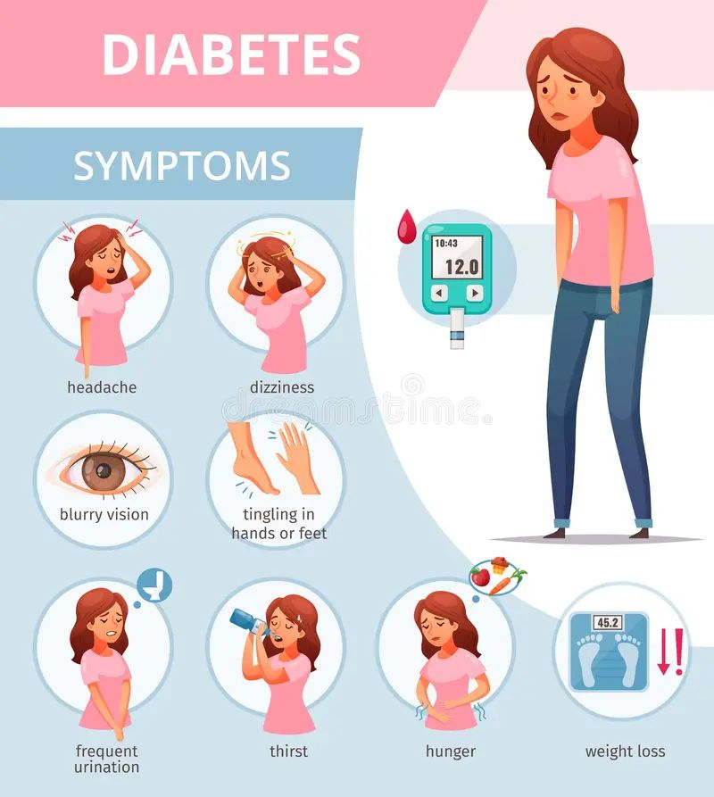
Why this age group struggles most
Managing diabetes requires major lifestyle adjustments that collide directly with young adulthood — exams, social life, irregular schedules, financial strain, identity formation, and the pressure to fit in. This is the group that most needs support, and most often feels alone in navigating it.
7 Strategies That Actually Work
Proven, practical approaches to improving adherence. No perfection required.
The Adherence Journey
Understand
Learn what your medication does and why it matters long-term — not just day-to-day
Organise
Set reminders, anchor habits, and build your daily routine around consistent dosing
Communicate
Talk openly with your doctor about side effects, costs, and barriers without fear of judgment
Stay Consistent
Track adherence, refill early, and build your support network to maintain momentum for life
Quick Knowledge Check
10 questions. No pressure. See how much you've absorbed.
Trusted References
All content is drawn from internationally recognised health authorities and peer-reviewed sources.
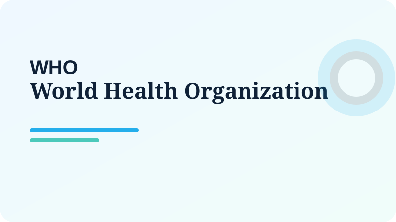
WHO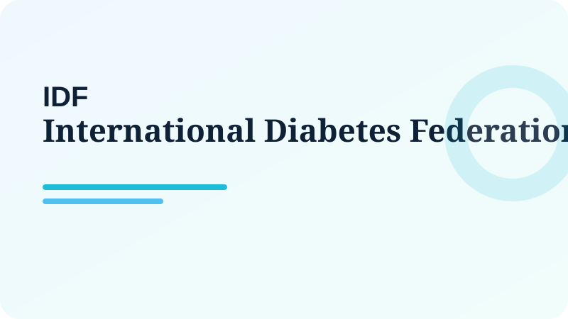
IDF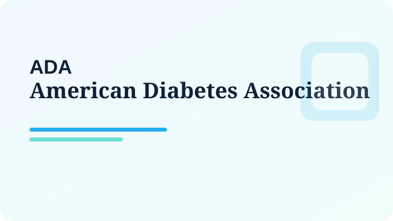
ADA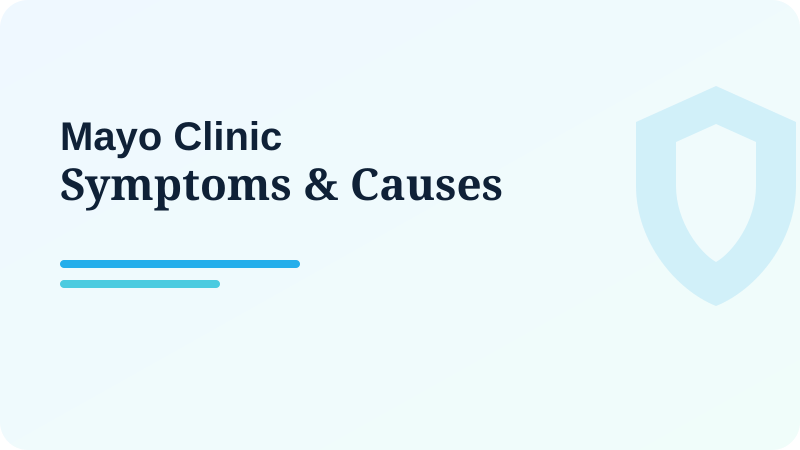
Mayo Clinic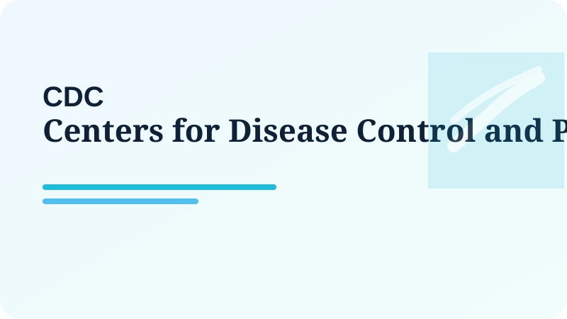
CDCStart one thing today.
Medication adherence isn't about perfection — it's about consistency. Pick one strategy from this site and commit to it this week.
See All 7 Strategies